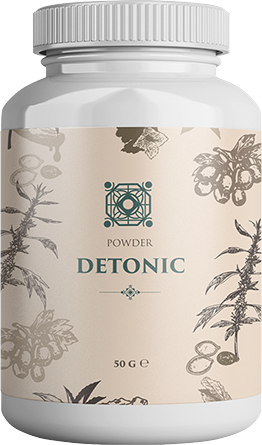

DETONIC
Тройной удар по циститу

Снимает воспаление и облегчает боль
Борется с бактериальной инфекцией
Защищает мочевыдели–тельную систему
100% результат
эко продукт
одобрено EAU
товар года
Основные симптомы обострения цистита:
ЧАСТЫЕ ПОЗЫВЫ В ТУАЛЕТ
БОЛЬ И ЖЖЕНИЕ ПРИ МОЧЕИСПУСКАНИИ
ОПОРОЖНЕНИЕ МОЧЕВОГО ПУЗЫРЯ МАЛЫМИ ПОРЦИЯМИ
НЕПРИЯТНЫЙ ЗАПАХ И ПОМУТНЕНИЕ МОЧИ
ПОВЫШЕНИЕ ТЕМПЕРАТУРЫ ТЕЛА
ОЩУЩЕНИЕ НЕПОЛНОГО ОПОРОЖНЕНИЯ
Цистит – воспалительный процесс
в слизистой оболочке мочевого пузыря
В 90% случаев заболевание имеет инфекционный характер.
Его вызывает «кишечная палочка» — Е.сoli.
Способствовать развитию инфекции может любая из этих причин:
стресс
переохлаждение
травма
гормональные нарушения
перенесенные заболевания
особенности анатомического строения мочеиспускательных путей
3 главных факта о цистите
1.
Чаще всего циститом болеют женщины из-за анатомических особенностей. До 50 лет 75% женщин хотя бы раз в жизни перенесли цистит.
2.
У 60% развивается хроническая форма, для которой характерно более трех обострений в год.
3.
Цистит может протекать и в скрытой форме, когда отсутствуют симптомы, лабораторные и бактериологические показатели находятся в пределах нормы. Это опасно развитием пиелонефрита.
поражение циститом
здоровая поверхность мочевого пузыря
Detonic - натуральное средство, способствующее оздоровлению мочеполовой системы
Биоактивная формула для поддержки здоровья и защиты мочевыводящих путей
Быстро снимает симптомы цистита: боль, резь, жжение, воспаление
Нормализует мочеиспускание
Повышает устойчивость организма к инфекциям
Препятствует прикреплению и размножению бактерий на поверхности слизистой мочевыводящих путей
Регулирует окислительно-восстановитель- ные процессы и повышает иммунитет
Оптимально сбалансированная комбинация точно подобранных компонентов
Экстракт листьев боярышника
Экстракт семян тыквы
Экстракт гвоздики
Экстракт плодов чаги
Алоэ
Экстракт чеснока
Инулин
Мнение специалиста:
Ключ к быстрому и эффективному лечению цистита – своевременное назначение соответствующей терапии. При цистите положительно зарекомендовала себя фитотерапия. Этот метод лечения растительными средствами обосновался на научной платформе.
DETONIC показал себя в качестве эффективного и безопасного препарата.
Я использую его в своей практике, так как препарат полностью натуральный, легко всасывается и с потоком крови быстро достигает места воспаления в мочевых путях. Главное отличие DETONIC от других препаратов натурального происхождения в том, что в его состав входит проантоцианидины, которые эффективны против бактерии Е.сoli и других возбудителей цистита.
DETONIC обладает накопительным действием:
- — облегчает симптомы заболевания
- — снимает воспаление
- — очищает мочеполовую систему от инфекций
- — создает защитный слой, который предупреждает рецидивы и развитие хронического заболевания.
Отзывы

Amy Owen, 34 года
Если бы я знала как лечить цистит правильно с самого начала, то бы не запустила его до хронической формы. Но я рада, что в моей жизни появилось такое средство как DETONIC. Препарат помог снять боль и воспаление. Через 3 дня после применения я уже нормально ходила в туалет. Хотя обычно болезнь затягивалась на недели… И самое главное, что приступы цистита у меня случаются по 3-5 раз в год. А после приема DETONIC прошло уже полгода без возобновления болезни.


Cordelia Morgan, 54 года
Что такое цистит я узнала после менопаузы. Врач сказала, что такое возможно из-за гормональной перестройки организма и ослабленного иммунитета. DETONIC мне помог лучше, чем другие средства. Сколько лет страдаю хроническим циститом, но впервые узнала, что обострения можно так быстро вылечить. Ни один антибиотик не сравнится с натуральным препаратом.
Liliana Hoover, 42 года
Отличный препарат! Действует быстро и очень надолго можно забыть о цистите. Первый раз принимала его года два назад после нескольких рецидивов цистита. К моему удивлению, обострений не было очень долго. Пока я очень сильно не промёрзла. Как только я почувствовала первые симптомы цистита, то сразу вспомнила про DETONIC. Благодаря этому средству, я очень быстро вылечилась и до осложнений не дошло. Всем рекомендую!
Detonic действует в 3 этапа:
1.
снимает болезненные симптомы
2.
борется с возбудителем заболевания
3.
формирует защиту мочевыводящих путей
Остерегайтесь подделок!
В связи с огромной популярностью средства DETONIC, участились случаи фальсификации.
Оригинальный препарат от цистита DETONIC можно приобрести только на этом сайте.


ПОЖАЛУЙСТА, ОБРАТИТЕ ВНИМАНИЕ!
Количество упаковок, необходимое для желаемого результата, определяется индивидуально и в отдельных случаях может увеличиться.
DETONIC
Тройной удар по циститу
Снимает воспаление и облегчает боль
Борется с бактериальной инфекцией
Защищает мочевыдели–тельную систему
100% результат
эко продукт
одобрено EAU
товар года